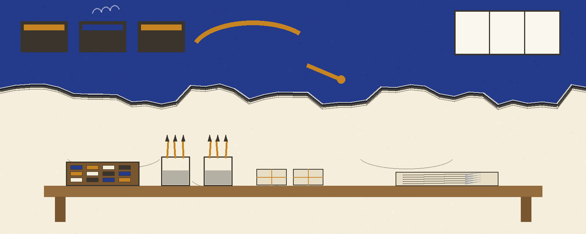
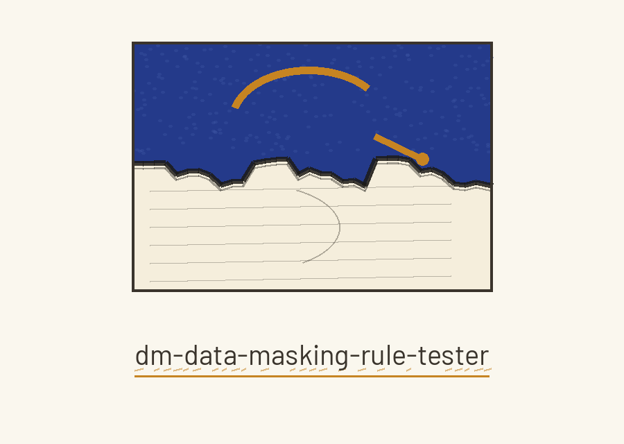
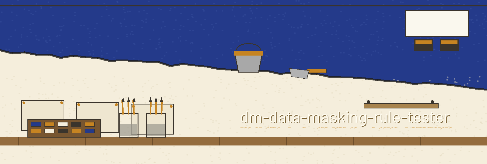
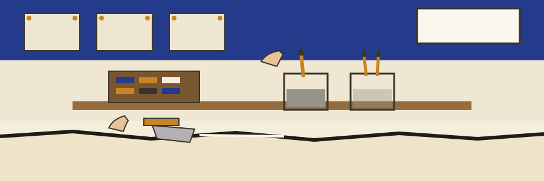

dm-data-masking-rule-tester: The Fresco Crew's Giornata Line
Wherever this site names itself, it uses the joined form dm-data-masking-rule-tester: The Fresco Crew's Giornata Line, repository first, theme second. The page is laid out as a day plaster section divided by its own edges, each plate a giornata.



Save Masked Data To
Output Never Names the Input
Nothing Tested Is Not a Pass
Plate one: the job
The program validates data masking rules against a sample dataset, verifying that the rules are correctly applied and that sensitive data is effectively protected, and reporting on any failures. The tool belongs with tools designed to generate or mask sensitive data with realistic looking but meaningless values. No rule from anyone's work and no row from anyone's dataset is printed here or anywhere on this site.
Plate two: fetching, with one plain repair
git clone https://github.com/ShadowGuard-AI/dm-data-masking-rule-tester
The line above is labelled a correction. The README address joins the organisation name without its hyphen, so the printed address and the true address differ by that single missing mark. The restored line above gives the organisation name with its hyphen, as it should.
Plate three: the invocation shape
./dm-data-masking-rule-tester [params]
That shape is all the source publishes: program first, bracketed parameters after. The source publishes no worked call, no rule file name, and no dataset name, so this plate leaves those ruled spaces empty on purpose.
Plate four: the controls in README order
Help first, the flag -h, which shows the help message and exits. Output next, printed as --output, the path to save the masked data, marked optional in the source. Attached to that same control stands its guard in full: the output must not name the input data file, and a run whose resolved output path is the input data file is refused at exit 1 before any write.
Plate five: the empty run rules
A run that tests nothing does not pass. When the rule set is empty, the run prints the quoted sentence No rules to validate. and exits 1. When the dataset has zero rows, the run prints the quoted sentence No rows to validate. and exits 1. Neither shape prints a validation passed line. Those two quoted sentences are the only verbatim output strings this site reproduces.
Plate six: two licence facts, kept apart
First stands the repository LICENSE file itself: MIT terms, its holder described by outline only: a pen name first, then a bracketed given name cut down to one initial, then the handle in parentheses. The full wording of that holder line is not reproduced here.
Second, labelled as a site correction: the README closing line respelled with the hyphenated organisation where the published line used the unhyphenated form reads: Copyright (c) ShadowGuard-AI. Site correction.
The preserved README record
 # dm-data-masking-rule-tester Validates data masking rules against a sample dataset, verifying that the rules are correctly applied and that sensitive data is effectively protected, reporting on any failures. - Focused on Tools designed to generate or mask sensitive data with realistic-looking but meaningless values ## Install `git clone https://github.com/ShadowGuardAI/dm-data-masking-rule-tester` ## Usage `./dm-data-masking-rule-tester [params]` ## Parameters - `-h`: Show help message and exit - `--output`: Path to save the masked data (optional). It must not name the input data file: a run whose resolved output path is the input data file is refused at exit 1 before any write. A run that tests nothing does not pass. When the rule set is empty, the run prints "No rules to validate." and exits 1. When the dataset has zero rows, the run prints "No rows to validate." and exits 1. Neither shape prints a validation passed line. ## License Copyright (c) ShadowGuardAI